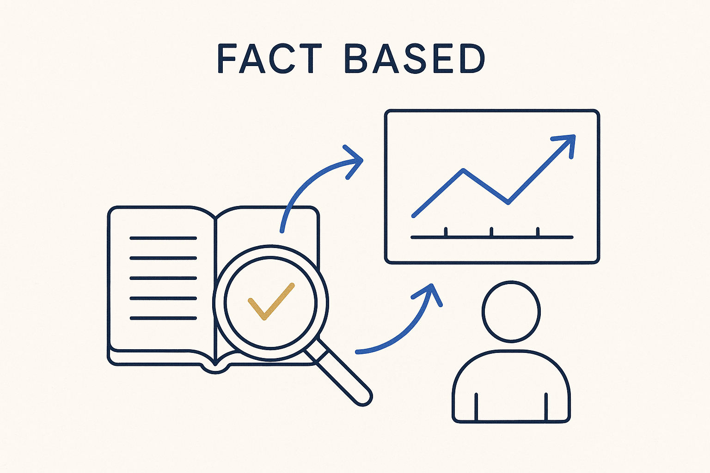

Decide on verified facts, not opinions or assumptions — including about our own work and our own learning: measure, then conclude.

> Decide on verified facts, not opinions or assumptions — including about our own work and our own learning: measure, then conclude.
Working fact-based means grounding decisions in what is verifiably true, not in the loudest opinion or the most comfortable assumption. In data work this is almost too obvious to say — yet plans are constantly built on “the source is probably fine” or “everyone knows this rule.” Fact-based is the discipline of checking: look at the actual data, run the query, confirm the assumption before you build on it. When a claim can’t be backed by a fact, it is treated as a hypothesis, not a foundation.
The sharp part is turning it on ourselves. We should be fact-based about our own work and our own learning too — dogfood the principle. Don’t assume the team understands the new glossary; measure it. Don’t assume the model matches the business; check it against reality. The same rigor we demand of the data, we owe to our own claims about progress, quality and knowledge.
Fact-based pairs with data-driven: fact-based is the stance (only verified truth counts), data-driven is the practice (let the measurements steer). Together they replace opinion-led decisions with evidence-led ones — and make it much harder to fool ourselves, which is the most common failure of all.
Where it lives: the signature principle of Breakthrough Modeling — verified facts over comfortable assumptions.
[Read the article ↗](https://medium.com/@jacovanderlaan/fact-based-modeling-meets-metadata-as-code-can-fco-im-be-the-semantic-backbone-of-modern-data-5a231d98dcf7)